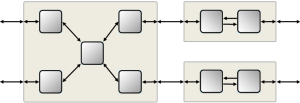

OMNEST is an object-oriented discrete event network simulation framework.
The framework has a generic architecture,
which allows it to be applied to various problem domains where complex behavior
needs to be simulated with high performance: protocol modeling,
modeling of wired and wireless communication networks, architectural
simulation of high-performance clusters, to name a few.
The noncommercial version, OMNeT++, has a large academic
user community, with several groups publishing and supporting
simulation models, and hundreds of papers published each year
on the simulation of wireless networks and other topics.
Our users commonly mention the following items when asked why they
chose OMNEST (or OMNeT++):
- very efficient -- OMNEST simulations execute fast and scale very well,
which can be surprising given the amount of features in the simulation library
- can be learned quickly -- some C++ knowledge is required, but the programming model and
the API can be picked up quickly, and one can become productive in a short time
- great community -- the simulator has a large user community, and a lot of information
is freely available on the Internet; this is very useful when one encounters a problem,
as the solution is often just a web search away (compare that with proprietary
tools where publicly available information is often limited to marketing materials)
- component model -- simulation models are easier to understand and maintain
and can be combined in unexpected ways (because components usually do not interact with
each other directly at the C++ level, only via means provided by OMNEST, e.g. messages)
- flexible -- the simulator and models can be extended in pleasantly flexible ways;
exotic scenarios such as interfacing with other simulators and external systems,
parallel simulation, emulation, and combinations of the above, can be realized;
and the full source code is available to study and debug when needed
Component Model

OMNEST models are composed of nested
modules that primarily communicate by exchanging messages
One of the fundamentals of the OMNEST framework is the component-based
architecture of simulation models. Models are built from reusable
components, called modules, which can be combined to form more complex structures. The
depth of module nesting is not limited. Modules communicate primarily by
message passing, via connections or by direct sending. Module behavior can be
programmed in C++, using the simulation infrastructure provided by OMNEST.
Component architecture provides multiple benefits:
- simulation models are easier to understand and maintain, and can be combined productively,
(because components do not interact with each other directly at the C++ level,
only via means provided by OMNEST, e.g. messages).
- facilitates code reuse
- helps you choose the right abstraction level: a component in a model can be later
replaced with a more detailed or a less detailed version,
and you can also replace a single component with a composite one or vice versa.
Components are assembled using a domain-specific language, NED, that can
be edited both graphically and in source. The NED language defines the
appearance, parameters, and connection points of components (modules),
and also the submodules and internal connections (netlist).
NED has support for parametric topologies, packages, inheritance, interfaces,
metadata annotation, documentation comments, and many other language features
necessary for creating and working with large model frameworks.
Simulation models can be parameterized. Module parameters
can carry simple (int, double, string, bool) and compound data types (e.g. XML),
and can be set to values like normal(1.0,0.3) to act as random number sources.
To reduce the amount of configuration needed to parameterize a model, parameters
may have default values, and both NED and configuration files allow several model
parameters to be set together by using wildcard patterns.
Configuration files also let you define parameter studies, that is, multiple runs
that iterate over several values of a parameter (or parameters), each repeated N
times with different random number seeds.
The Simulation Library
Simple modules are programmed in C++, using the APIs provided by the simulation
library. This functionality includes:
- Message passing
Modules communicate primarily by message passing, via connections or direct sending.
Messages may represent jobs, network packets, control information, or other entities.
OMNEST provides support for generating C++ message classes (e.g. packet headers)
from compact descriptions. Timers are also represented with messages that a module sends to itself.
- Random numbers
OMNEST offers multiple random number streams, pluggable RNG algorithms (the default being
Mersenne Twister), and many discrete and continuous distributions.
RNGs are rarely accessed in the code directly, as most of the time module parameters
are used as sources of random numbers.
- Publish-subscribe communication
OMNEST provides a signals framework that is used for publish-subscribe
communication among modules, obtaining notification about structural model changes,
exposing statistics, and so on. Signals emitted from a module propagate up to the
root in the module hierarchy, and modules and other code can subscribe to selected
signals at any level.
- Result recording
Model code can record any data as simulation result.
Data can be recorded directly, or the model can emit them as signals and let
the simulation framework take care of recording them in the appropriate form and
level of detail. Results can be recorded as scalars (e.g. the sum, count, average,
or other property of the values), as histograms, as statistical summaries,
or all values as vectors (i.e. time series). Result files can be plotted using
the IDE, or programmatically from GNU R (we have an R package that understands
result files) or other programming environments.
- Logging
Good log messages in the code (whether it is yours or 3rd party code) help you understand
the behavior of the model and can also reduce debugging time. OMNEST can also
save log messages (along with other activities of the model) into an event log
file that can be later filtered by module, simulation time, or other properties,
can be searched and examined, and can be viewed together with dynamically drawn
sequence charts.
- Access and runtime manipulation of models
OMNEST supports the creation and deletion of modules and connections at runtime,
opening the possibility for modeling dynamically changing networks, as well
as importing topology from an external source at runtime.
It is also possible to extract the network topology into a graph representation,
for example, for finding shortest paths.
Performance, Integration, and Extensibility
OMNEST allows many interesting possibilities:
- Open interfaces
All model files and output files are plain text to make it easier for you to process
them with your own custom or 3rd party tools. We also provide command-line tools
and libraries to manipulate them.
- Extensible
C++ plug-in interfaces are made available to customize various aspects of the simulation kernel:
event scheduling, configuration and model parameterization, result recording, and more.
- Embeddable simulation kernel
You can create your own applications that rely on the OMNEST simulation
kernel internally for simulation functions: the simulation kernel, model components,
or even whole simulations can be embedded into your program as C++ libraries.
Read more »
- Parallel simulation
Simulation models can be executed using parallel distributed simulation
on clusters or multicore/multiprocessor architectures,
to speed up the simulations or to distribute memory requirements.
Simulation models don't need to be instrumented for parallel simulation, but they need
to adhere to certain restrictions (e.g. no global variables and no direct access of
components that are instantiated in a different partition may be used).
Parallel simulation runs on top of MPI and employs conservative synchronization.
Using named pipes or other communication means instead of MPI is also possible.
- Multiple Replications in Parallel
OMNEST allows you to speed up steady-state simulations using the
Akaroa
package. Akaroa runs multiple replications of the model on nodes of a computing cluster.
(Akaroa software and license need to be obtained separately from its authors.)
- Real-time and hardware-in-the-loop simulation
The simulation kernel supports real-time and hardware-in-the loop simulation
via a plugin interface. A functioning and extensively commented source code
example will help you quickly implement your own application-specific
hardware-in-the-loop simulation.
- Network emulation capabilities
Available as part of model packages like the INET Framework.
- SystemC integration
The OMNEST-SystemC integration feature
allows for mixing OMNEST and SystemC modules in the same simulation program,
without the performance loss usually characteristic of co-simulation solutions.
Read more »
- HLA support
Allows for connecting OMNEST with other simulators via HLA / IEEE 1516.
Platforms
Simulations can be run on Windows and practically on any Unix-like environment
that is powerful enough and has a modern C++ compiler, including macOS and Linux.
The Simulation IDE is currently available on Windows, macOS, and Linux.